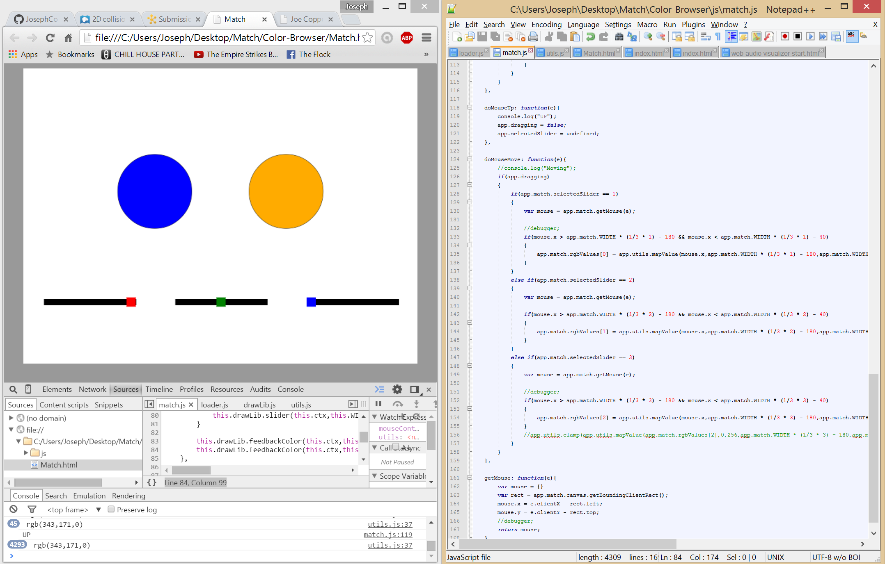

For this project, I decided to digitally adapt a game that I had made for my physical computing and alternative interfaces class. The objective of the game was to match the RGB values of one color. The arduino version just keeps generating random colors and goes forever. This game would have a lot more features, and will be playable with friends. The game falls within the casual puzzle genre. If all goes well the game will be made for computer browsers and will be optimized for mobile devices with touch controls. The game will have a random mode where the player will be able to just constantly guess colors, in spirit of the original game. Additional modes would be VS modes where friends can make colors up for the player to guess, and a speed mode where the player can see how many guesses they can get before time is up. This game will have limited images used, and will be a majority of canvas drawing.
Milestone1
Click here for Milestone1For this first milestone I established a majority of the game modules and began flushing out the draw code. This game is going to use in canvas sliders, so I started working on the code for the sliders to adjust accordingly. One function I created was the mapValue function, that takes the value between two numbers and converts it properly to a different range. I started working out how the sliders would display, as well as the circles. One circle is going to be the color one has to guess, while the second circle will reflect the RGB values you have selected. At the end of this milestone, the user color circle updates correctly based off the in game sliders. The sliders work using a mouseContains method that checks if the mouse is clicking on the respective slider. By the next milestone I hope to have a UI laid out and nearly finished, as well as at least one game mode flushed out and finished.